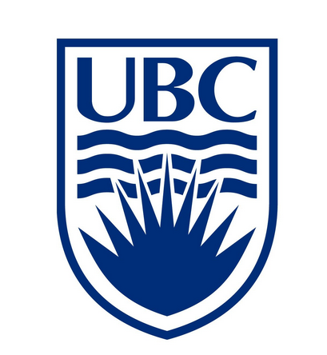

Resume
Education:
University of British Columbia
B.Sc Computer Science, 2017-2021, GPA 3.95 / 4.00
- Dean of Science Scholarship
- Science Student Scholarship
- Trek Excellence Scholarship awarded to top 5% of faculty
- Dean's Honour List
Computer Networks - Algorithms and Analysis - Parallel Computation - Computer Hardware - Operating Systems - Artificial intelligence - Computer Graphics - Relational databases - Machine Learning & Data science - Multivariable Calculus - Matrix Algebra
Experience:

SAP
Agile Software Engineering Intern For HANA & Analytics, January 2021
- Independently purposed, integrated parallelization into a Python end-to-end UI testing framework, redesigned with Selenium docker containers on Docker Swarm. Reduced 4 hour runtime to 7 mins, O(n) to O(1) scaling
- Worked with an Agile team on Cloud Foundry Micro-services for SAP Analytics Cloud for routing, authorization and authentication, Node.js and Java, in containerized Ubuntu based environments.
- Resolved multiple high risk security vulnerabilities affecting End-to-End OAuth server workflows.
- Designed a virtualized build environment solution for %800 faster compiling of SAC.
Copperleaf Technologies
Software Developer Co-op, Predictive Analytics Team
- Built a ML project, independently, for optimizing an algorithm that involved a complex classification problem & data processing in order to automate & optimize the core of the Analytical engine.
- My prototype built in ML.NET resulted in 10-20% performance improvement & simplified user input.
- Worked on the back-end of Copperleaf's C55 product using C#, Oracle SQL DB, Visual Studio
UBC Computer Science
Teaching Assistant for Computer Systems & Architecture (CPSC 121, 213)
- Led tutorials and labs to teach and help students with Assembly, Java, C projects for 6 semesters
- Continuously achieved near perfect scores from end of term student evaluations
Skills:
Proficient: Java, C, C++, C#, Python, JavaScript, Node.js, SQL, Linux, Bash, Git, Docker
Familiar: Typescript, Erlang, Android Studio, OpenGL, Cloud Foundry, MongoDB, Selenium